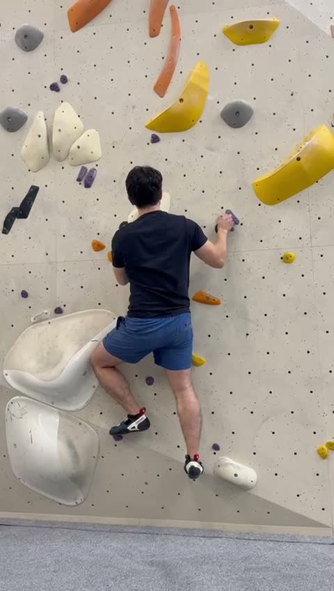
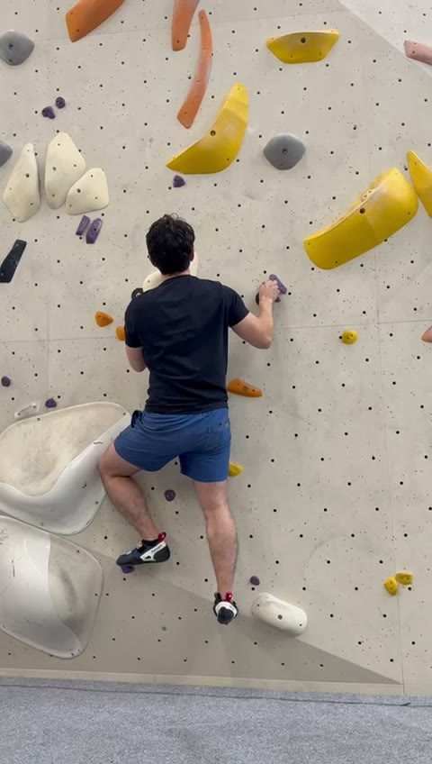
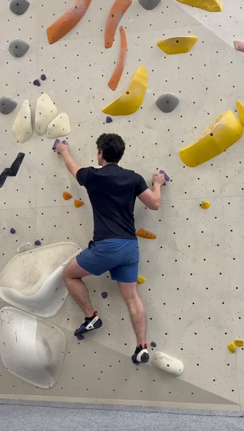
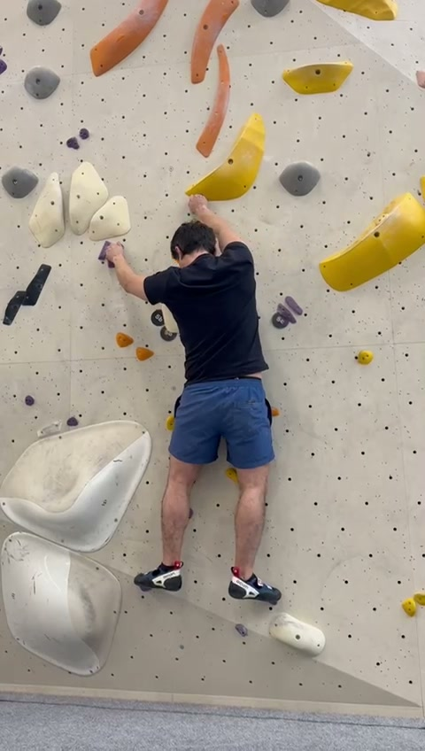
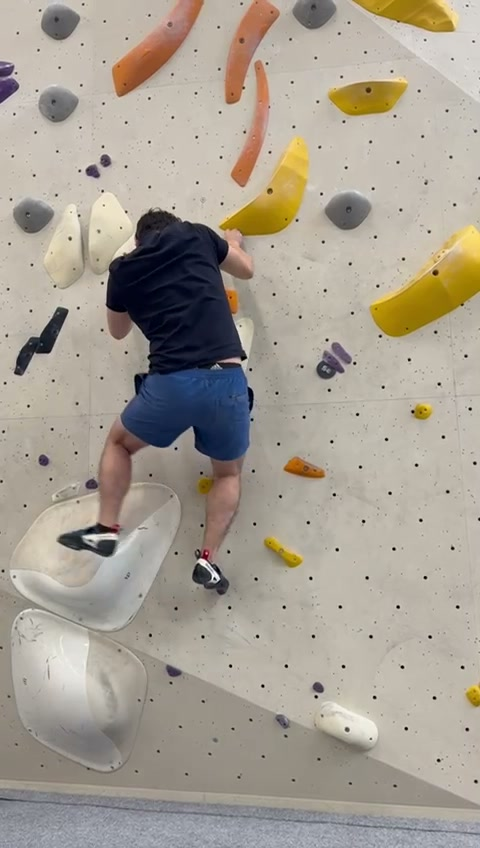
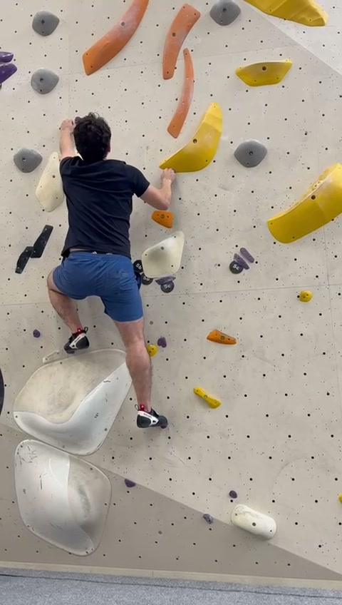
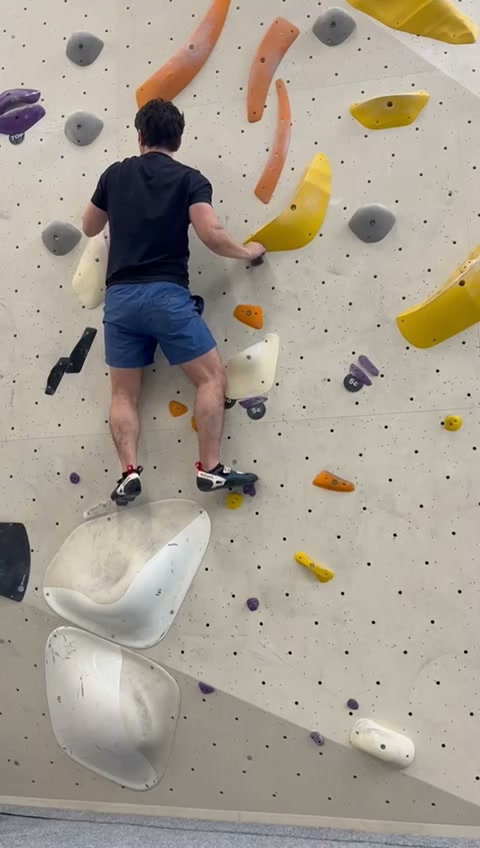
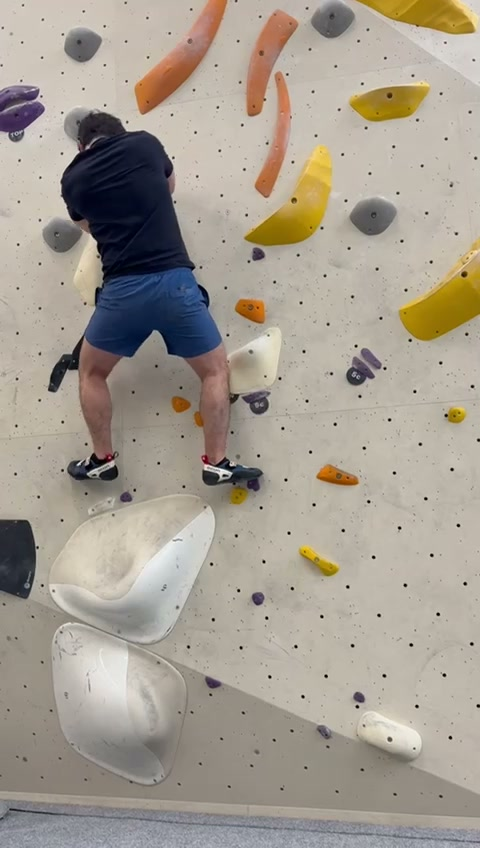
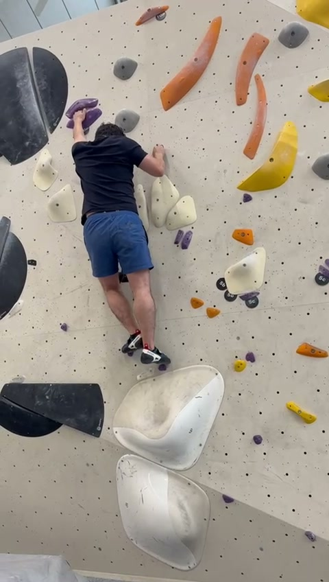
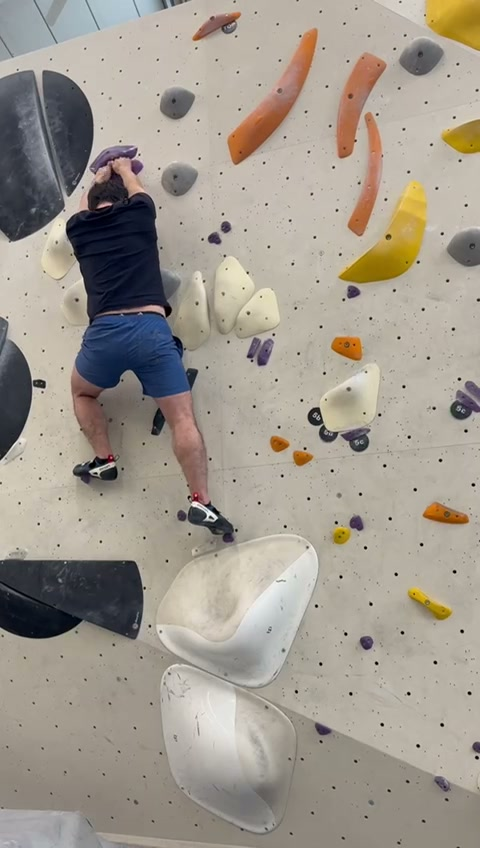

Biomechanical Analysis & Coaching Report

Frame 1

Frame 2

Frame 3

Frame 4

Frame 5

Frame 6

Frame 7

Frame 8

Frame 9

Frame 10
Giselle is climbing a moderately steep boulder problem. The analysis reveals a climber with strong route-reading abilities but who could significantly improve efficiency through hip placement and arm positioning.
Cue: "Lead with your hip." Turn the hip on the reaching side in toward the wall.
Benefit: Brings COG closer to the wall, extending reach and loading the skeleton rather than muscles.
Cue: "Hang like a skeleton." When pausing, fully straighten arms.
Benefit: Saves significant forearm and bicep energy by using bone/tendon structure.
Cue: "Place, Weight, Then Reach." Never reach until the feet are set.
Benefit: Ensures 70% of drive comes from legs rather than upper body.
Cue: "Brace for the move." Tighten abs before every reach.
Benefit: Prevents hip sag and keeps feet on the wall during dynamic moves.
| Metric | Level | Priority |
|---|---|---|
| Route Reading | ✅ Good | Low |
| Hip Rotation | ⚠️ Developing | High |
| Arm Efficiency | ⚠️ Developing | High |
| Foot Precision | ✅ Good | Medium |
| Flagging Usage | ❌ Underutilized | Medium |